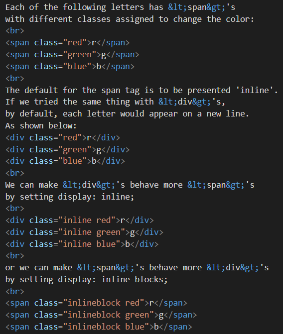
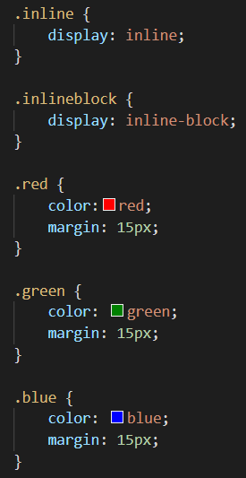

What does it mean to display inline vs inline-blocks?
You can use <span>'s instead of <div>'s
to markup up text without creating a new line.
Each of the following letters has <span>'s
with different classes assigned to change the color:
r
g
b
The default for the span tag is to be presented 'inline'.
If we tried the same thing with <div>'s,
by default, each letter would appear on a new line.
As shown below:
r
g
b
We can make <div>'s behave more <span>'s
by setting display: inline;
r
g
b
or we can make <span>'s behave more <div>'s
by setting display: inline-blocks;
r
g
b
When an element has {display: inline-block;} set,
it respects layout properties (like margins) on all sides.
When an element has just {display: inline;} set,
it only respects layout properties to the left and right.
Have a look at the screenshots of the code behind this
blog you are reading, to see if you can see how the difference
between <span>'s and <div>'s.


See how in the first example, the spans ignore the {margin: 15px;},
but when {display: inline-block;} is applied, this changes?